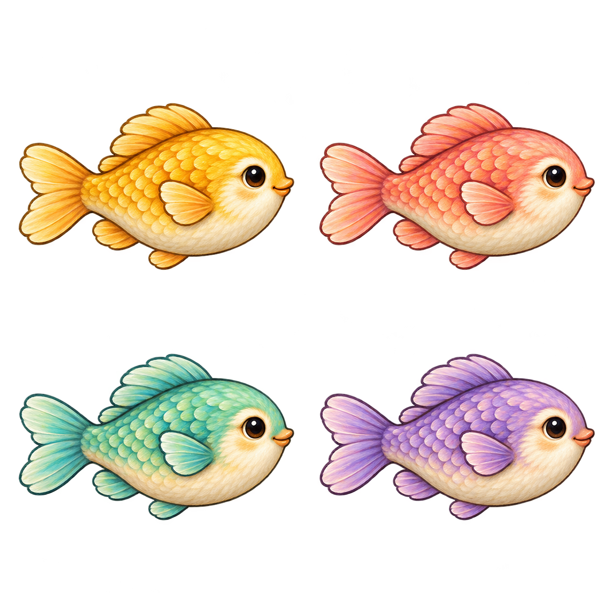
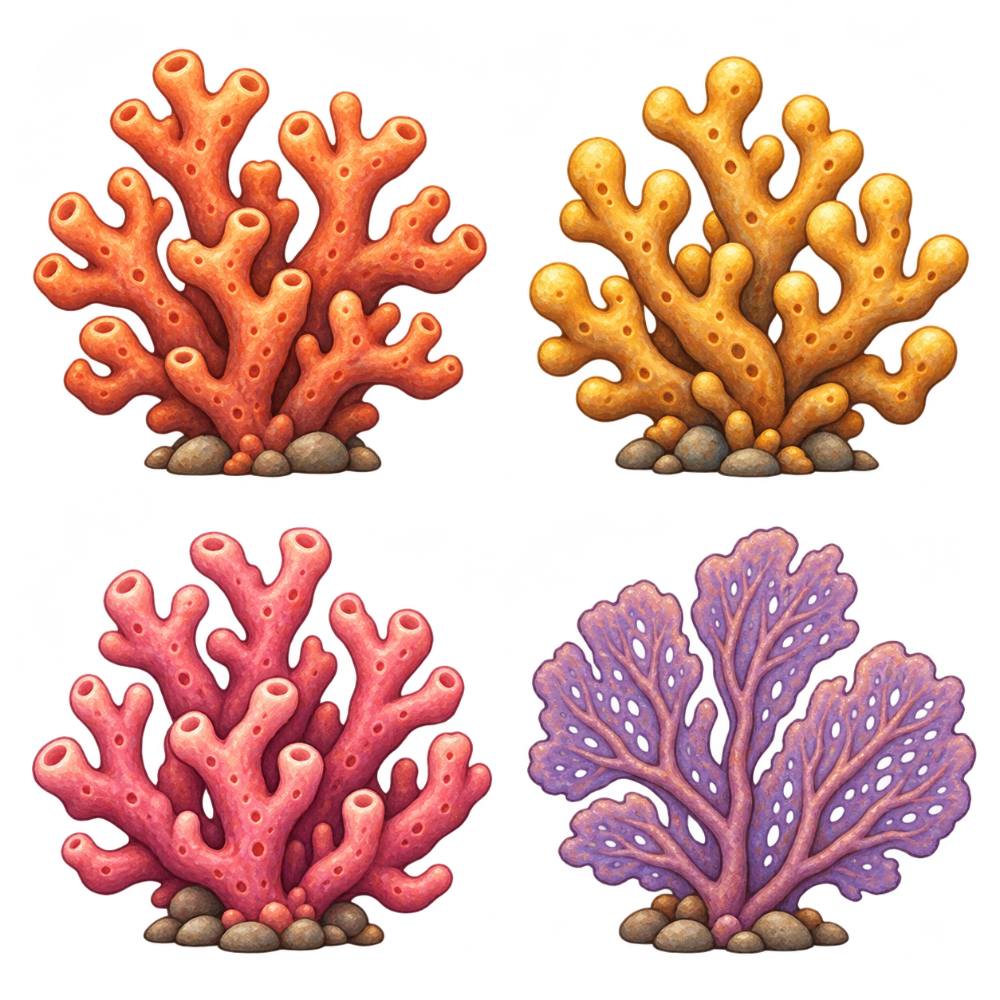
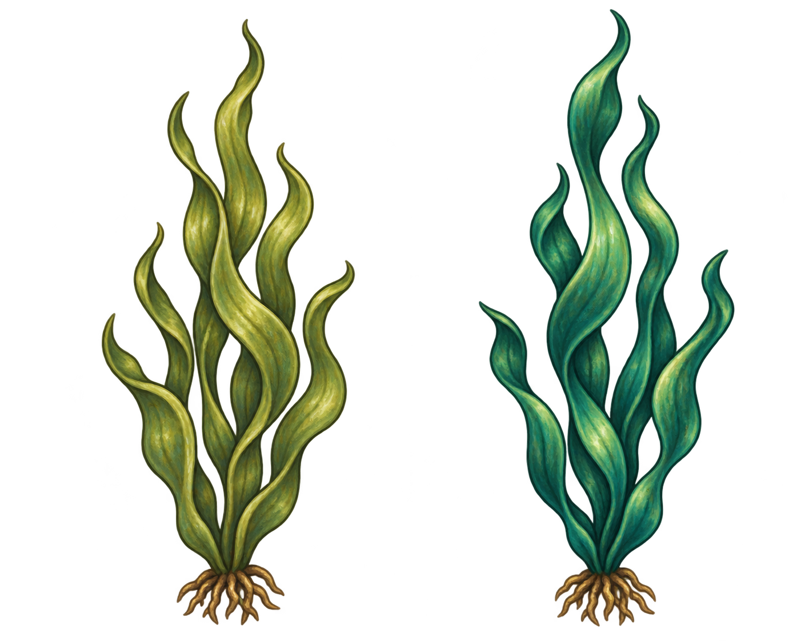
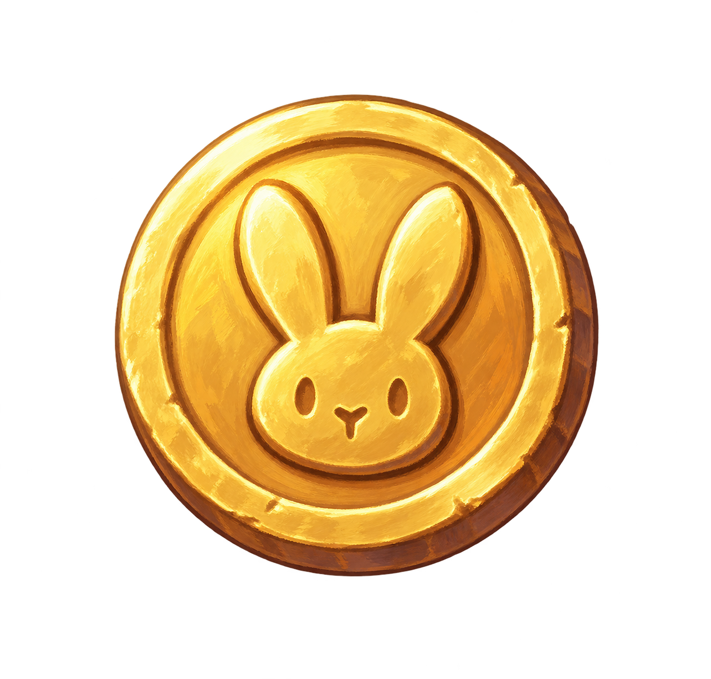

Painted reef life
Fish and turtles spread apart, swim around Benny and turn around the reef. Watch Benny swim through the school, or inspect the matching painted gold coins. This preview keeps normal progress and coins unchanged.



